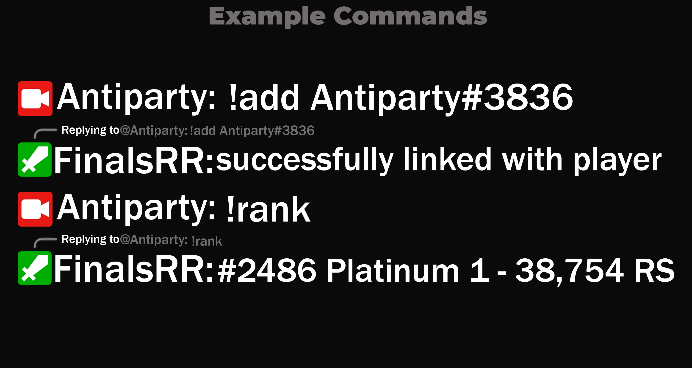

"FinalsRR completely changed how I track my stats — super easy to use and accurate!"
- Ginger manAll your THE FINALS statistics in one place.
Connect your Twitch account to get started.

FinalsRR was developed to give the THE FINALS streaming community a tool to display real-time match stats, leaderboards, and player data directly on Twitch.
The bigger goal of this project is to encourage Embark/Nexon to consider providing a public developer API. They’ve mentioned that it’s on the way — but having clearer communication, regular updates, or even early access would go a long way for community tools like this.
If you’re a developer, creator, or just someone who wants better tools for THE FINALS, share the project, give feedback, or join the conversation.
Join the Discord CommunityDisclaimer: FinalsRR is not affiliated with or endorsed by Embark Studios or Nexon. All trademarks are the property of their respective owners.
"FinalsRR completely changed how I track my stats — super easy to use and accurate!"
- Ginger man
"Connecting my Twitch was seamless. Love the clean UI and fast updates."
- Jamie L.
"A must-have for every THE FINALS player. Reliable and intuitive."
- Morgan K.